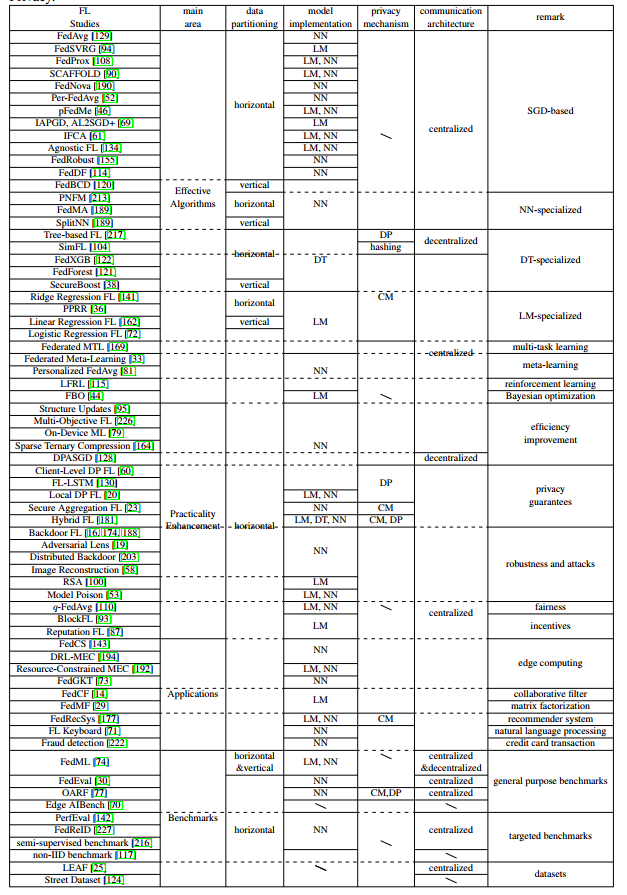
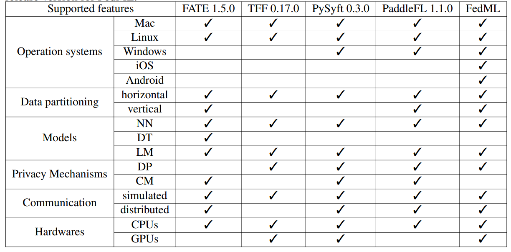

Federated Learning
はじめに
本ドキュメントは、連合学習と連合学習に関する技術やライブラリについてまとめたもので、 連合学習の環境構築者向けのドキュメントとなる。
連合学習の環境構築者は、主にネットワーク・グラフや並列処理・分散処理（スーパーコンピュータ）に関する知識が重要となる。
連合学習とは
データを取集せずに学習モデルを合成し、学習モデルを改善していく手法。 データを収集し学習する従来の手法だとプライバシーの問題があるため、近年、異なるドメイン間でデータを送信せず学習させる手法として注目を集める。
転移学習との違いは？？
参考論文
A Survey on Federated Learning Systems: Vision, Hype and Reality for Data Privacy and Protection
メリット・デメリット
- M: プライバシーの問題を回避できる
- D: 従来のデータセンターでの学習は、学習データの偏りをコントロールできますが、連合学習の場合、データが散らばっているため偏りをコントロールすることができない
より詳しくは次のリンクを参照
連合学習フロー
モデルは次のフローで改善されていく
- train: Edge側で学習済みモデルを生成する
- feedback: 複数のEdgeからサーバへモデルを送信する
- aggregate: モデルを合成する
- transfer: 合成されたモデルをEdgeへ展開する
機械学習の一般的なフロー
- データ収集
- データ加工・クレンジング
- データロード
- モデル学習
- モデル評価
- モデルデプロイ（本番稼働）
- モデル監視（運用）
並列・分散・連合処理について
並列・分散・連合処理について、次のように区別することとする。
- 並列: １つのマシン上で複数のCPUで同一データセットで同一処理を行い結果を集約する
- 分散: 複数のマシン上で同一データセットで同一処理を行い（並列を組み合わせてもよい）結果を集約する
- 連合: 複数のマシン上あるいは複数のCPUを用いて、データセットを共有せず同一処理を行い結果を集約する
連合学習のユースケースとしては、
- 企業Ａ内のデータセットAを企業Ａ内のEdge A, Edge Bを用いて並列処理でモデルAを生成
- 企業Ｂ内のデータセットBを企業B内のEdge C, Edge Dを用いて並列処理でモデルBを生成
- 連合学習サーバにモデルA, モデルBを集約しモデルCを生成
- 異なる連合学習サーバで生成したモデル群を集約し、モデルDを生成（クロスサイロ）
ということができる理解。
ただし、4.のケース（複数の連合学習サーバ）を組み合わせることは未対応の模様。
https://github.com/FedML-AI/FedML/issues/59
疑問
モデルは隣接ノードの資源を使って集約されていく？ 連合学習サーバで集約される？ 連合転移学習とは
転移学習（Transfer learning）
別のタスクで学習された知識を転移する機械学習の手法
スケーリングについて
cross-device
データの所有者自体の数が多いが、データや計算資源は少ない。 IOT機器など。
cross-silo（クロスサイロ）
データの所有者自体の数は多くないが、データや計算資源は比較的十分にある。 企業間での連合学習などのケース。
トポロジ
分散型機械学習では、コンピュータネットワークの接続形態（トポロジ）を考慮する必要がある（どのような時、何を選ぶかについては理解していない）。
FedMLには、垂直FL、分割学習、分散型FL、階層型FLなどのさまざまなトポロジ定義がある。
- バス
- スター
- リング
- フルメッシュ
- パーシャルメッシュ
- Centralized
- Hierarchical
- Decentralized
- Vertical
-
Split
-
symmetry（左右対称）
- asymmetry（左右非対称・非対称トポロジ）
データパーティションについて
集中型（FedAVG）
データの流れは非対称で、マネージャーがローカルモデルの情報を集計し、グローバルなパラメータをアップデートする。 セキュリティリスクが高いらしい。
分散型（SimFL）
通信が直接データの所有者同士で行われ、すべてのデータの所有者がグローバルなパラメータを更新するあ。
データの流れは非対称とは？？？
インセンティブ設計
クロスデバイス設計では、マネージャーは強力な中央サーバ。 クロスサイロ設定では、組織は強力なマシンを持っていることが期待されるため、マネージャーはFLプロセスを支 配する組織の1つになることもできます。
通信
simulated
distributed
セキュリティ
Differential privacy（DP・差分プライバシー）
個々のレコードが学習に参加しているかどうかを当事者が知ることができないようにする手法。
Cryptographic methods（CM・暗号化手法）
当事者は、送信する前にメッセージを暗号化し、暗号化されたメッセージを操作し、暗号化された出力を復号化して最終結果を取得する手法。
モデル
NN
DT
LM
アルゴリズム

research
OSS
- FedML: star 1.1k
- FATE: star 4.1k
- TensorFlow Federated: star 1.8k
- PySyft: star 8k
- PaddleFL: star 0.3k
- fedn: star 59
比較

| タイプ/リンク | クロスデバイス | クロスサイロ |
|---|---|---|
| FedML | true | false? |
| FATE | true | ? |
| TensorFlow Federated | true | ? |
| PySyft | true | ? |
| PaddleFL | true | ? |
| fedn | true | ? |
FedML
連合学習における有名なライブラリ
複数のノードへのモデル展開など複雑なワークフローを簡略化し、連合学習の実行を支援する
機能
次のリンクからGUIから提供している機能を調べた
管理機能
- ユーザ管理
- グループ管理
- プロジェクト管理
- グループは１つのみアタッチすることができる
- 計算ノード（エッジ）管理
- 構成管理（モデルとハイパーパラメータなど学習に関する設定）
- 学習を開始する
- 構成を指定する
- デバイスを指定する
- ジョブ管理
- 開始したジョブに名前とタグをつけることができる
- ステータスを確認することができる
- トレーニング結果の視覚化
- Edgeのシステムパフォーマンスの視覚化
- 分散ロギング
- client modelとaggregated modelを確認することができる
- client modelとaggregated modelはrunidに紐づいている
- FLServer - ユーザー - Edge Deviceの繋がりが見える
実装されていない機能
- 任意のタイミングで自動実行するジョブスケジューラは特に見当たらない
- 1つ連合学習のサイクルを管理。関連するジョブフローなどの実行などは管理していない。
アーキテクチャ
- fedml_core: 動的計画法に基づく分散コンピューティングに関する通信やスケジューラを提供
- fedml_api: 連合学習アルゴリズムを提供
- fedml_experiments: fedmlのアルゴリズムのテスト機能を提供
- fedml_mobile: スマートフォンを使用したデバイス上のトレーニングをサポート
- fedml_IoT: IoTデバイスを使用したデバイス上のトレーニングをサポート
ソースコードの読み方
https://doc.fedml.ai/user_guide/open_source/algorithm-reference-implementation.html
fedml_experiments
fedmlのアルゴリズムのテストを提供し、どのようにアルゴリズムを実装するかサンプルを確認できる。
- https://github.com/FedML-AI/FedML/tree/master/fedml_experiments
| タイプ/リンク | 概要 | 論文 |
|---|---|---|
| centralized/fedgkt | 単体プロセスでの学習 | |
| standalone/decentralized | 片側信頼ソーシャルネットワークを介した中央サーバーの自由連合学習（分散型FL） | リンク |
| distributed/fedgkt | 大規模エッジ群でのCNN連合学習 | |
| fedavg | エッジデバイスが中央サーバのプライバシー保護を信頼していない場合に選択される学習パラダイム | リンク |
fedml_api
連合学習アルゴリズムを提供
- https://github.com/FedML-AI/FedML/tree/master/fedml_api
fedml_core
動的計画法に基づく分散コンピューティングに関する通信やスケジューラを提供
- https://github.com/FedML-AI/FedML/tree/master/fedml_api
fedml_core
FedML-coreは、通信とモデルトレーニングを2つのコアコンポーネントに分離します。
- 通信プロトコルコンポーネント
- PyTorchまたはTensorFlowに基づいて構築されたデバイス上のディープラーニングコンポーネント
Worker-Oriented Programming
FedML-coreは、FLアルゴリズムのトレーニングまたは調整に参加するときに、ワーカーの動作をプログラムするために使用できる、 ワーカー指向のプログラミングデザインパターンを提供する
- Coordinator: 中央ワーカーでトレーナの管理をする
- Trainer: 中央ワーカー以外のワーカー
勾配法
ComManager: トポロジ（隣接するノード）に基づいて通信を行う？ モデルマネージャー
通信について
FedMLは、次の通信規格を使用可能。
- MPI
- MQTT
- GRPC
- TRPC
| 規格名 | レイヤー | スループット |
|---|---|---|
| MPI | TCP/IP | High |
| MQTT | TCP/IP | High |
| GRPC | HTTP2 | low |
| TRPC | HTTP? | low |
通信バックエンドを検討する時、レイヤーとスループットの観点で検討する。
学習にPyTorchを用い、デフォルトでMPIを通信バックエンドに利用する。
なお、BytePSというフレームワークは、MPIではなくクラウドベースの模様。
WSGIの実装であるwerkzeug mod_wsgiへのインターフェースとしてWerkzeug
ASGIは、HTTP Trailersを処理しない。 gRPCストリームではHTTP Trailersを使用するため、ASGIは対応できない。
https://developer.mozilla.org/en-US/docs/Web/HTTP/Headers/Trailer
MPI
Point-to-Pointとグループ通信がサポートされる。 MPIはOSI参照モデルの役割にあてはめると、役割としては5層（セッション層）以上に対応すると考えられるが、実際の実装ではソケットとTCP（トランスポート層）を使用している。
MPI_Comm_rank: 自分のプロセス番号（＝ランク）を取得 MPI_Comm_size: 実行に参加しているプロセス数を取得
MQTT
主にIOTなど、低電力でコンパクトである場面でのメッセージングで主流となってきている。
GRPC
HTTP2上に構築されるRPCプロトコル。
GPRCのサンプルは次で紹介されている。
- https://github.com/FedML-AI/FedML/tree/master/fedml_experiments/distributed/fedavg
- https://github.com/FedML-AI/FedML/tree/master/scripts/aws
#!/bin/bash
DEV_NODE=fedml-grpc-server
LOCAL_PATH=/Users/hchaoyan/source/FedML/
REMOTE_PATH=/home/ec2-user/FedML_gRPC
alias ws-sync='rsync -avP -e ssh --exclude '.idea' $LOCAL_PATH $DEV_NODE:$REMOTE_PATH'
ws-sync; fswatch -o $LOCAL_PATH | while read f; do ws-sync; done
# fswatch -o 現在のバッチの変更イベントの数を含む単一のメッセージを出力します。
GRPCのサンプル定義ファイルは次に存在する。
- https://github.com/FedML-AI/FedML/tree/e0c58c539bf1d7ae9911e57d7f223ac19af03902/fedml_core/distributed/communication/gRPC/proto
FastAPIとGRPCの両方（１度の定義で両対応）をサポートするフレームワーク。スター数が少ないのがネック。
https://bali-framework.github.io/bali/
TRPC
HTTP2
インストールにはMPIを実装した共有ライブラリが必要。
sudo apt-get install libopenmpi-dev
python3 -m pip install mpi4py
# mpi4py.MPI.Open_portでMPIプロセスのグループ間の接続を確立するために使用できるアドレスを返す
from mpi4py import MPI
MPI.Open_port()
# port_name文字列 でエンコードされたネットワークアドレス
# => '4206821377.0:3078334918'
Installation
システム構成
- FLServer: 連合学習管理用サーバ
- FLClient(Agent): 連合学習を行うEdge群
- MLOps(platform): FLServerと通信を行うWeb GUI。ライブデモ
構成要件
https://doc.fedml.ai/user_guide/open_source/installation.html
- ヘッドノード（ログイン・テスト用）が必要
- N個のcomupute node（multi-GPU server: e.g., 8 x NVIDIA V100）が必要
- NFSなどの一元化されたフォールトトレラントファイルサーバー必要（計算ノード間で大規模なデータセットを共有）中央集権型の分散アルゴリズムを使わないのなら必要ではない？？
Software
- Python >= 3.7.4
- MPI4Py >= 3.0.3: Message Passing Interface (MPI) 規格の Python バインディング
-
PyTorch >= 1.4.0: PyTorchが提供する分散コンピューティング機械学習はMPIを使っている
-
https://mpi4py.readthedocs.io/en/stable/
疑問
連合学習ではデータ共有が不要なのになぜNFSが必要か？
インフラ構築
NFS（ネットワークファイルシステム）構成
秘密鍵公開鍵を置いてsshログインできるようにする
ソフトウェア構築
wget https://repo.anaconda.com/miniconda/Miniconda3-py38_4.11.0-Linux-x86_64.sh
bash Miniconda3-py38_4.11.0-Linux-x86_64.sh -b -p $HOME/miniconda
conda install pytorch torchvision cudatoolkit=10.2 -c pytorch
conda install -c anaconda mpi4py
pip install --upgrade wandb
git clone https://github.com/FedML-AI/FedML.git
cd FedML/fedml_experiments/distributed
pip install -r requirements.txt
Setup MLOps(platform)
Web GUIは提供されていないと思われる。 代わりにhttps://docs.wandb.ai/を推奨しているように思える。
Setup Server
これに従えばできるっぽい？
python3.7を対象としているので書き換える
-
- install miniconda
- install dependencies
- download sample data
-
- run run_fedavg_standalone_pytorch.sh
- fedavg
- run run_fedavg_standalone_pytorch.sh
Setup Edge
- install client agent and login
- invite collaborators and group management
- project management
https://doc.fedml.ai/user_guide/mlops/mlops_workflow_step_by_step.html
事前にアカウントを登録しaccount_idを取得します
https://open.fedml.ai/#/login?isRegister=true
dockerをインストールします
...
git clone https://github.com/FedML-AI/fedml_edge_deployment
cd fedml_edge_deployment
# start to pull docker image and run the FL Client Agent
./run.sh $account_id
Setup IOT
IOTの場合は、server_ipを指定する。 EDGE型でserver_ipは指定できるのか？
python fedavg_rpi_client.py --server_ip http://127.0.0.1:5000 --client_uuid '0'
MPIは何に使うもの ->
用語集
pytorchなどで出てくるキーワードをメモしておく
DDP(DistributedDataParallel)
pytorchなどで出てくる
optim（最適化）
pytorchなどで出てくる。 任意の方法で効率的にパラメータを更新する。
学習率（lr）
MNIST
データセットの名前である。 MNISTは、7万枚の手書き数字の「画像＋ラベル」データが格納されており、無料でダウンロードできる。
サイロ
システム、業務プロセス、データなどが、他部門と連携を持たず独立してしまう状態。 連合学習は、サイロとなっているデータを取り扱う。
独立同一分布（IID）
確率論と統計学において、確率変数の列やその他の系が、それぞれの確率変数が他の確率変数と同じ確率分布を持ち、かつ、それぞれ互いに独立している場合をいう。 そうでない場合、非IIDという。
簡単にいうと、非IIDは観測した出来事に偏りがあり、思い込みが生じているようなもの。だと思う。
完全情報ゲーム・不完全情報ゲーム（symmetry/asymmetry information）
とられた行動や実現した状態に関する情報が全て与えられているゲーム。将棋など。 カードゲームなど、自分の手札が相手に公開されていないなど、互いに持っている情報が違うゲームを不完全情報ゲームという。
ロバスト
頑強性。例：チェックサムを仕込んでプログラムやバイナリデータのデータ改変を検知する機能を持たせる。